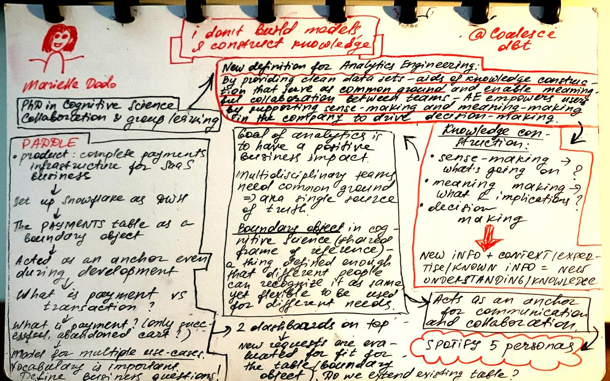
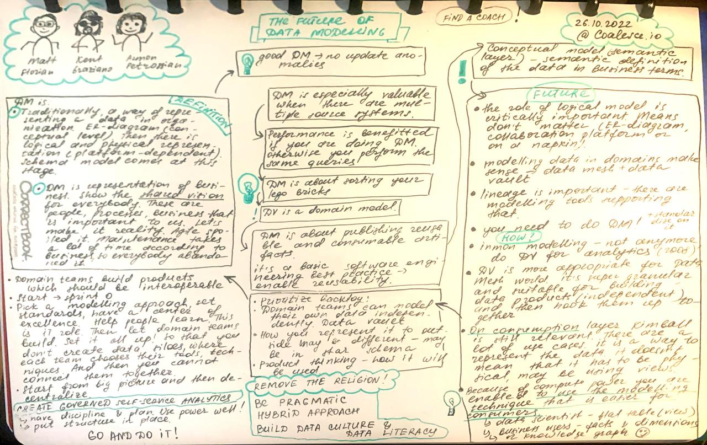

Notes from random talks I bump into
2022
Coalesce 2022 - I don't build models, I construct knowledge by Marielle Dado
Recommended resources:
- What is analytics engineering? - DBT
- The Story Of Spotify Personas - Spotify
My notes:

Coalesce 2022 - The future of Data Modelling with Armon Petrossian, Kent Graziano and Matt Florian
My notes:
